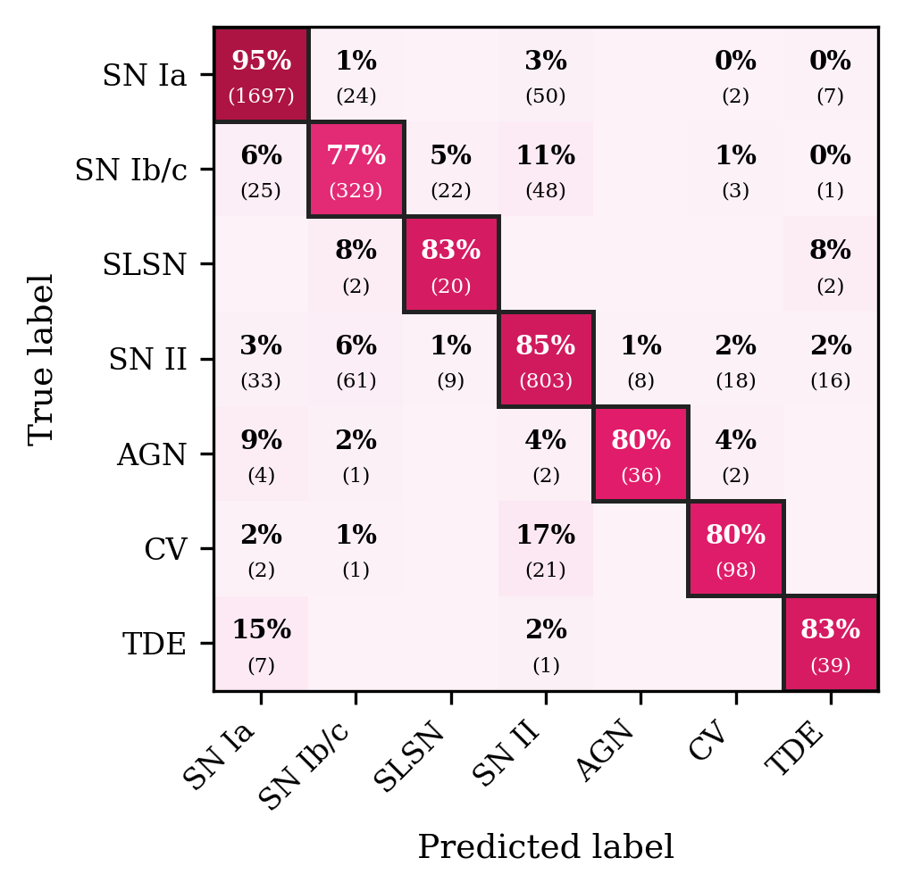
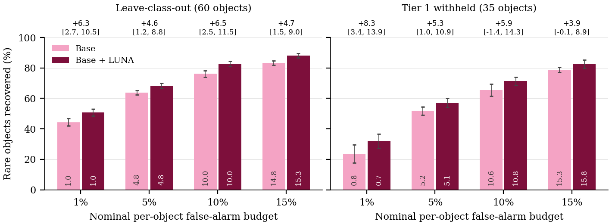
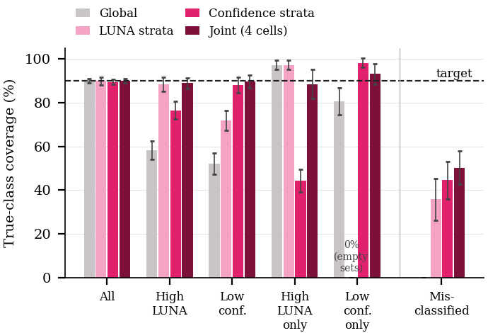
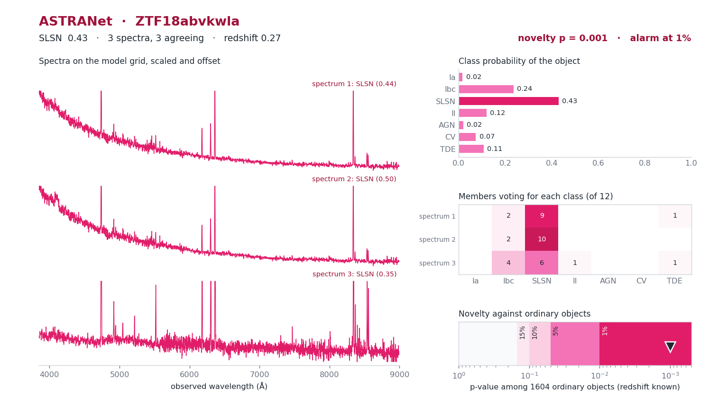

ASTRANet
Spectroscopic classification of transients that works with or without a redshift, and a novelty score for every object that tells an observer when a source looks unlike anything in the training classes.
What it does
Classifier
Seven classes (Ia, Ibc, SLSN, II, AGN, CV, TDE) from an observed-frame spectrum. Redshift and phase enter through FiLM conditioning and are dropped at random during training, so the model accepts a spectrum with no metadata. Twelve members: six with a SpectraNet backbone, six with a dilated temporal convolutional backbone.
Novelty
One score per object from all its spectra: the mean embedding, 23 spectral descriptors and the 16 LUNA anomaly scores. The score is compared with ordinary objects of the same redshift stratum, which gives a p-value and alarms at 1, 5, 10 and 15%.
Uncertainty
Object-level conformal prediction sets at a 90% target, stratified jointly by anomaly score and classifier confidence, so the coverage holds for the unusual objects where a single threshold falls short.
Classification
Test split: 3,394 spectra of 1,666 objects. The same trained model is evaluated with the metadata withheld at inference.
| Input | Accuracy | Macro recall |
|---|---|---|
| Spectrum, redshift and phase | 89.0% | 83.4% |
| Spectrum and redshift | 88.5% | 81.4% |
| Spectrum and phase | 87.7% | 80.8% |
| Spectrum only | 86.2% | 78.6% |

Novelty
The rare set holds 60 objects in nine classes that the classifier never saw: FBOTs, ILRTs, luminous red novae, calcium-rich transients, afterglows, a long GRB, QSOs, blazars and a BL Lac. The alarm rate is the fraction of ordinary objects that alarm.
| Rare objects recovered at an alarm rate of | 1% | 5% | 10% | 15% |
|---|---|---|---|---|
| No anomaly exposure (mean of the 16 LUNA scores) | 51.5% | 74.1% | 82.3% | 86.9% |
| Class withheld from the head (ExtraTrees + LUNA summaries) | 50.7% | 68.4% | 82.8% | 88.2% |
| All of Tier 1 withheld (35 objects) | 32.0% | 57.1% | 71.4% | 82.7% |
| Classifier confidence alone | 24.8% |


In SkyPortal
ASTRANet runs as a SkyPortal analysis service. Every spectrum of the source goes through the twelve members, the class probabilities are averaged, and the novelty stage scores the object. The service returns a classification, annotations and a one-page report.

| Service condition (phase withheld), target alarm rate | 1% | 5% | 10% | 15% |
|---|---|---|---|---|
| Rare objects recovered, class withheld from the head | 52% | 70% | 84% | 89% |
| Novae that alarm (ordinary for the novelty stage) | 3% | 9% | 15% | 21% |
| Realised alarm rate on 1,666 test objects | 1.3% | 4.8% | 10.0% | 14.6% |
Use it
pip install "astranet[novelty] @ git+https://github.com/applecider-ml/astranet"
python tools/fetch_weights.py --url <astranet_checkpoints.tar.gz> --novelty-url <novelty.joblib>
python -m astranet.skyportal spectrum.dat --redshift 0.05 --report .from astranet.predict import Ensemble
ens = Ensemble.from_dir("models")
out = ens.predict(wavelength, flux, redshift=0.05) # redshift optional
print(out["predicted"], out["probability"])Citation
Sasli, A., et al. 2026, ASTRANet: Metadata-Robust Spectroscopic Classification and Object-Level Novelty Detection, submitted to PASP. The SpectraNet backbone is from Xu et al. (2026, PASP 138, 094504).